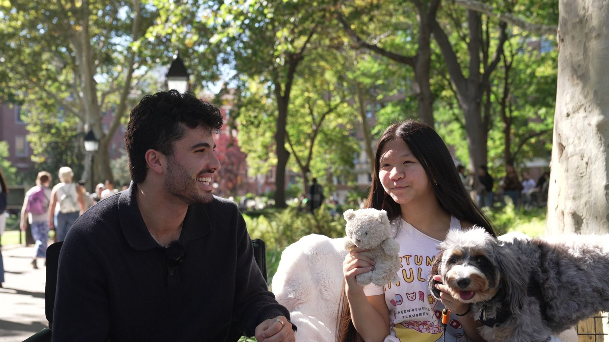
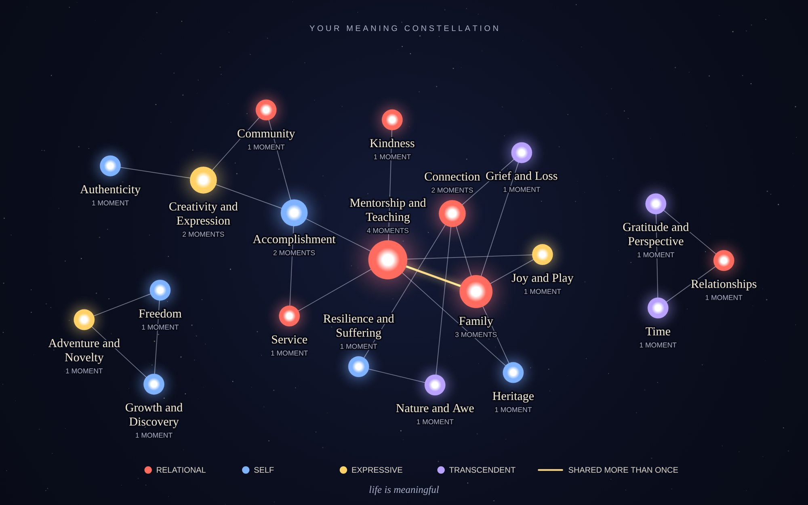
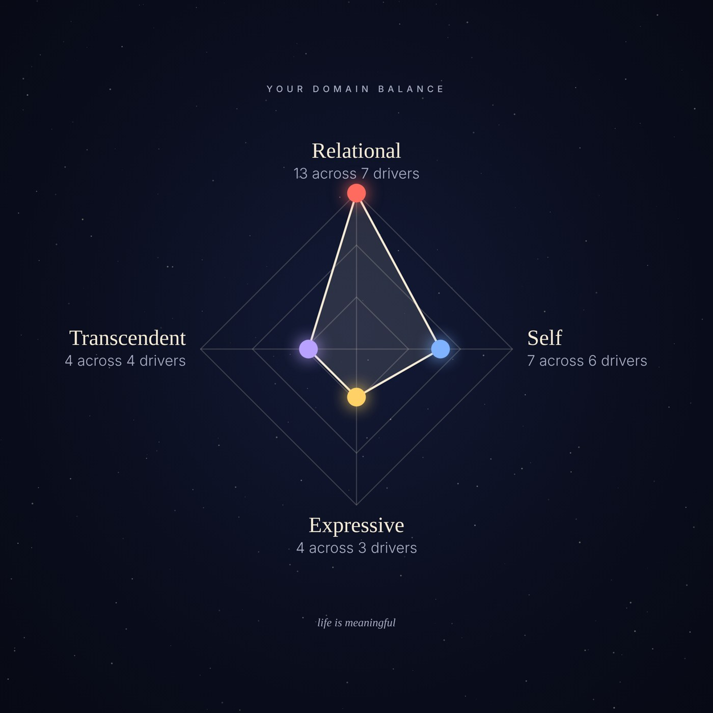
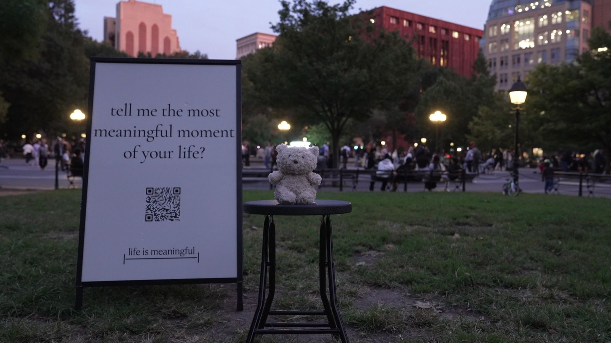

The Meaning Map · a guided reading of your most meaningful moments
Deeper self clarity. A clearer life direction. Techniques for a life of consistent meaning. All drawn from your own most meaningful moments.
Begin your Meaning Map · $97If it doesn't show you something true about yourself, I'll refund you.
A few hours, in one sitting or several. Adults only.
Best on a laptop.
Everything you get
$97
Founding price. One payment. No subscription.
Begin your Meaning Map · $97If it doesn't show you something true about yourself, I'll refund you.
A few hours, in one sitting or several. Adults only. Best on a laptop. Card, Apple Pay or Google Pay.
i.
See the values that have been driving meaning across your whole life.
ii.
Choose the two Life Guiding Values to make your decisions by.
iii.
Techniques built from your own Meaning Drivers, for your days, your weeks and your year.
Built from hundreds of real people's most meaningful moments.

watch one momentNo. 1 · It starts with one question
I've asked hundreds of people in the park. The Meaning Map asks you, then asks again, until your moments are on the page.
No. 2 · What you receive


Your archetype, and the pair of Meaning Drivers that is most yours.
A read across all of your moments: the patterns no single moment shows.
A drawing of your Meaning Drivers and how they connect.
Your strongest drivers explained, beside how often each appears in the archive.
Where your meaning leans across the four domains.
Real stories from the archive that are most like your own.
Three practices built from your drivers: one daily, one weekly, one yearly.
Your full set of values, and a guided way to choose the two you make decisions by.
A private community where you can bring your Life Guiding Values. Free for the first 100 people.
If it doesn't show you something true about yourself, I'll refund you.
No. 3 · How it works
1
Pay once, $97, then set up your account.
2
You're guided to at least eight of your most meaningful moments, one at a time. Stop and come back whenever you like.
3
Your Map is written by AI, guided by my research and hundreds of real meaningful moments.
4
Read your Map chapter by chapter, then choose your two Life Guiding Values.

No. 4 · Where it comes from
The Meaning Map grew out of an archive of real people's most meaningful moments. Those moments came back to the same 27 Meaning Drivers, in four domains. Your Map reads your moments against that archive.
Explore the ArchiveNo. 5 · What it is, and what it is not
No. 6 · In their words
“For me, I discovered that I make meaning through unstructured time with friends, and now I work to align my life around that.”
Braden, startup founder
No. 7 · The offer
Founding price. One payment. No subscription.
Everything listed at the top of this page is included.
Begin your Meaning Map · $97The Meaning Map opens soon. Join the letter and I'll tell you the day it does.
If it doesn't show you something true about yourself, I'll refund you.
Best on a laptop.
No. 8 · Questions
Most people can't at first. You're guided with questions, one moment at a time, and small moments count as much as big ones.
A few hours in total. You can do it in one sitting or come back to it over several days.
No. Your Map is written by AI, guided by my research and hundreds of real meaningful moments.
Bennett, and the AI that writes your Map. If you speak your moments, a transcription service turns your voice into text first. Your moments are also added to the life is meaningful archive without your name. There they support my research. A moment is shown to other people, for example as a moment like theirs in someone else's Meaning Map, only if you tick yes when you write it. You can ask me to remove your moments at any time. Read the privacy page.
If your Map doesn't show you something true about yourself, ask within 7 days of your purchase and I'll refund you. Read the refund page.
No. The Meaning Map is not therapy and does not treat anything. It helps you see what has already been meaningful in your life.
Not ready yet
Everyone makes meaning differently. Find which of the six archetypes is yours.